1、准备工作
（1）Python版本为2.7或者更高版本
（2）已经创建了一个Python工程并且添加了内容，具体参考： Getting Started tutorial
2、第一步——运行代码
打开之前编写的Solver.py文件，在编辑框中右键，选择快捷菜单中的“Run 'Solver'”选项。
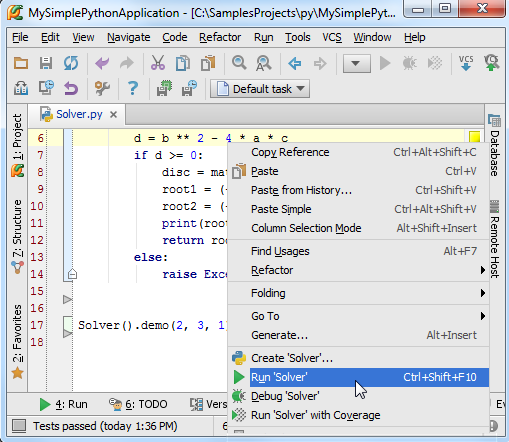
此时脚本文件正常运行并在调试工具窗口中显示程序的输出值：
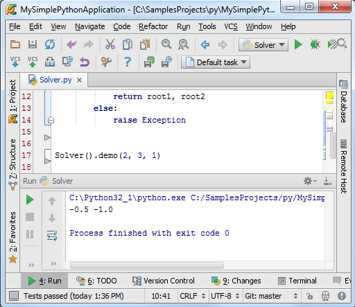
接下来我们对这两步操作的具体内容做详细的解释。
3、什么是Run/Debug模式
每个需要运行/调试的脚本文件都需要一个特殊的配置文件来指定其脚本名称、所在目录以及其他重要的运行调试信息。Pycharm已经集成了这种配置文件，避免用户手动去创建。
每次当你单击Run或者Debug按钮时（或者在快捷菜单中执行相同操作），实际上都是将当前的运行/调试配置文件加载到当前的调试模型中。
如果你仔细观察第一张图片就会发现，在组合框中根本就没有 run/debug的相关信息，知道第二张图片中它们才出现。这就意味着当执行运行/调试命令的时候，Solver脚本的run/debug配置文件才会自动生成，正如现在所显示的这样。
此时再主工具栏中Run（绿色箭头按钮）和Debug（绿色甲壳虫按钮）两个按钮变得可用：
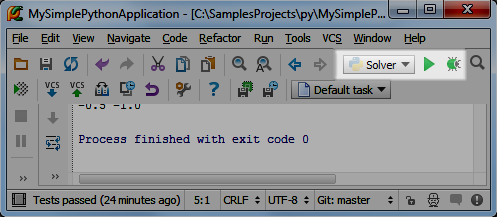
同时这两个图标还是半透明，也就意味着他们临时的，即由Pycharm自动创建的。
OK，单击下拉箭头查看当前的可用命令操作：
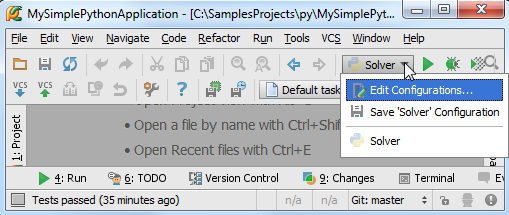
如果你已经设置了多个run/debug配置方案，它们将都会显示在这里下拉列表中，单击选中一个作为当前工程的run/debug配置文件。
4、保存run/debug配置信息
在上图的下拉列表中，单击Edit configuration选项，打开run/debug配置编辑窗口：
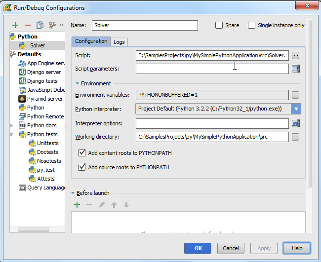
在左侧目录中将会出现两个节点：Python和Default。在第一个节点目录下有一个单一的配置选项'Solver'，在第二个选项下则有很多配置信息。
这意味着什么呢？
在Default节点下，你只能看到框架的名称或者模式名称，如果你创建一个新的Run/Debug配置文件，它将会在所选中的模式分支下进行创建，如果你更改了Default节点下的设置，相应的与其相关的所有配置文件都会更改。
例如，你想将Pycharm中所用到的Python解释器替换成远程或者本地解释器，就可以通过更改Python页面下的解释器设置，这样所有新建的调试配置文件都会使用这个新的解释器。
早Python节点下，只用单一的配置选项'Solver'，它属于Python类型的配置，但与Default节点下的Python机制并不相同，它使用一个非透明的图标进行的表示，这是用来指示当前配置文件的保存状态的，当你保存配置文件之后图标即变为非透明状态。例如，我们在Python类型下为当前的Solver脚本新建一个配置文件，取名'Solver1'。
如果你对已存在的配置文件做了任何更改，这些更改只会应用于对应的脚本区域。
5、正式运行
我们已经能够通过一种非常直接的方式，接下来我们寻求其他方法来运行脚本。
正如我们所知，运行脚本意味着加载当前的调试配置文件，因此，运行脚本主要遵循以下流程：
（1）在主工具栏中，单击run/debug组框，确认当前的调试配置文件信息
（2）做下面的工作（三选一即可）：
单击运行按钮，加载配置文件
按下Shift+F10快捷键
在主菜单上，选择Run → Run
此时，我们可以在Run tool window.窗口中观察程序的运行结果。
6、运行测试程序
我们这里并不讨论代码测试的重要性，而是探讨Pycharm如何帮助我们完成这一功能。
7、选择一个测试器
首先，需要指定一个测试器。单击工具栏的设置按钮，打开Settings/Preferences对话框，然后单击进入Python Intergated Tools页面（可以通过搜索功能找到），默认选择如下：
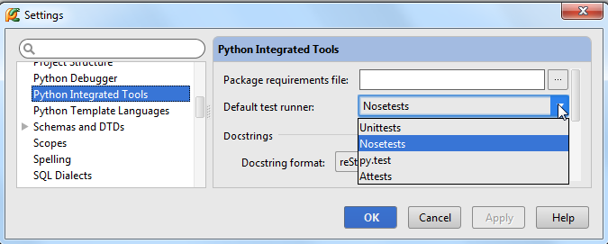
在这里我们选择Nosetests，保存并关闭对话框。
8、创建一个test程序块
首先我们创建一个test实例。Pycharm提供了一种非常智能的创建测试代码的方法：单击选中类名然后按下Ctrl+Shift+T快捷键，或者在主菜单中选择Navigate → Test，如果test程序已存在，则会直接跳转到对应代码，否则创建它：
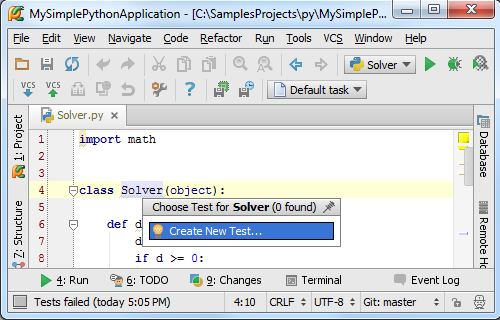
按照系统提示进行操作，Pycharm会显示如下对话框：
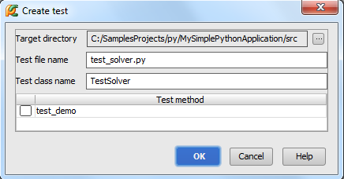
单击OK按钮，查看创建结果：
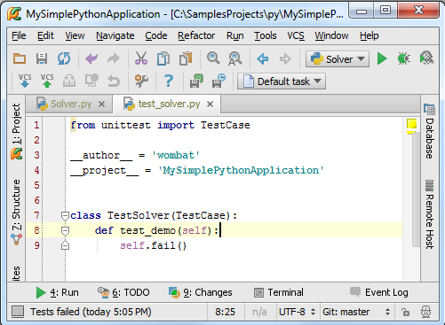
此时Pycharm已经自动创建了一个测试类，当然这只是一个类框架，需要我们手动编写测试函数。
9、运行测试代码
一切就绪后，右击测试类名，在弹出的快捷菜单中选择运行命令：
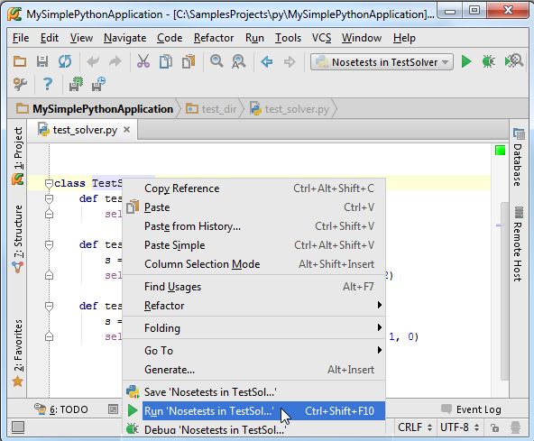
观察运行状态栏中 Test Runner tab的输出结果：
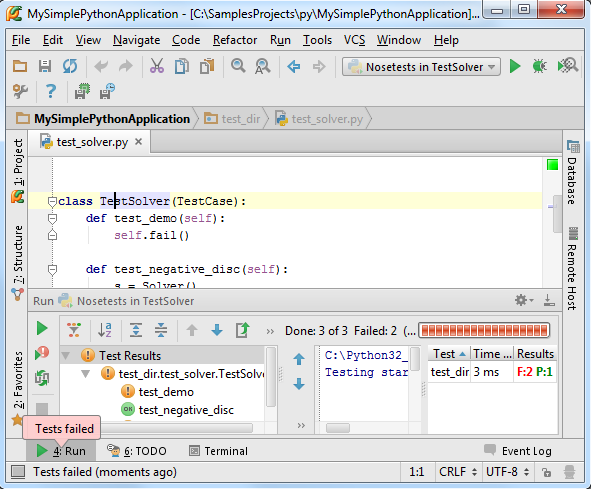
10、调试运行
首先要弄清楚，为什么要进行调试？假设我们的程序在运行过程中命中了一个错误，那我们如何定位错误发生的位置？这就需要进行调试。
在Pycharm中我们可以在其中直接对程序进行调试，唯一需要做的准备工作就是在程序必要的地方加设断点，接下来我们进行详细的介绍：
11、什么是断点？
一个breakpoint标记了一个行的位置，当程序运行到该行代码的时候，Pycharm会将程序暂时挂起以方便我们对程序的运行状态进行分析。Pycharm支持若干中类型的断点 types of breakpoints，可以通过对应图标进行分辨。
这里我们采用Python的行断点为例进行介绍
12、设置断点
方法非常简单，单击代码左侧的空白灰色槽即可：
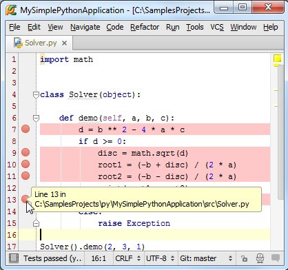
注意断点会将对应的代码行标记为红色，这种颜色标记目前还不能被用户所更改，我们会尽快出台解决方案。
顺便说一句，取消断点的操作也很简单，在同样位置再次单击即可。
当你将鼠标指针悬停在断点上方时，Pycharm会显示断点的关键信息，行号以及脚本属性，如果你希望更改该断点的属性，右击断点：
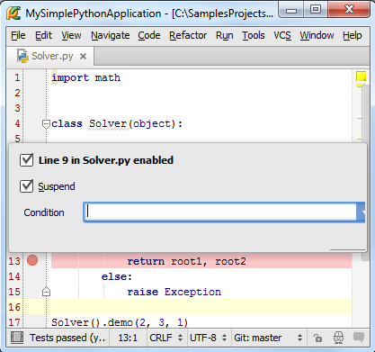
可以尝试对断点属性进行个性化更改，然后观察图标的变化。
13、代码调试
接下来，我们正式开始对代码进行调试。
首先从配置文件组框中选择同名的'Solver'文件作为当前调试的配置文件，然后单击调试按钮（绿色甲壳虫样式的按钮）：
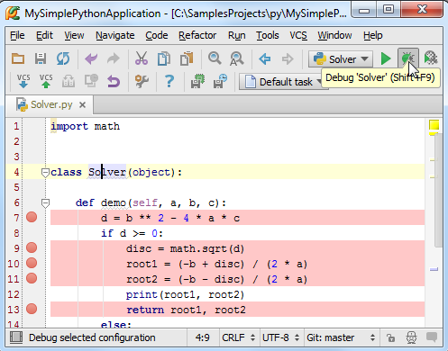
接下来会Pycharm会执行以下操作：
（1）PyCharm开始运行，并在断点处暂停
（2）断点所在代码行变蓝，意味着Pycharm程序进程已经到达断点处，但尚未执行断点所标记的代码。
（3）Debug tool window窗口出现，显示当前重要调试信息，并允许用户对调试进程进行更改。
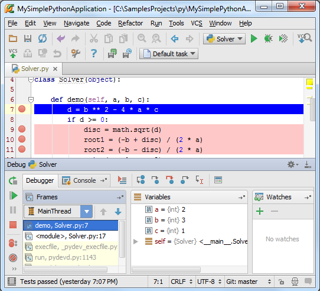
虽然Pycharm使用手册中已经完整提供了调试窗口中所有控件的功能信息，我们这里仍然对其进行简要介绍。我们发现窗口分为两个选项卡：Debugger tab and the Console tab。
（1）Debugger窗口分为三个可见区域：Frames, Variables, 和 Watches。这些窗口列出了当前的框架、运行的进程，方便用户查看程序空间中变量的状态等。当你选择一个框架，就会显示出相关的变量信息，当然这些区域都是可以折叠隐藏的。
（2）Console窗口显示当前的控制台输出信息，默认这个窗口位于Debugger之下，可以通过单击其标签将其前置显示。
当然我们可以改变这些窗口的摆放位置，如果你不喜欢程序的默认排版的话。具体参加Moving tabs and areas章节。
Debugger窗口的工作模式：
OK，现在程序暂停在了第一断点处，Frames窗口显示的是Solver脚本的第7行代码所对应的进程demo，相关变量a、b、c已经定义，但变量d尚未进行定义。接下来？
按下F9（或者左侧工具栏的绿色箭头），程序会继续运行到下一断点处，通过这种方式你可以将每个断点都运行一遍，观察变量的变化。
更多有关 Debugger窗口的信息参见软件手册：product documentation
Console窗口的工作模式：
为什么需要用到Console窗口呢？当我们需要查看程序给出的错误信息，或者进行一些额外的临时运算时，就需要在这个窗口里面进行。
单击Console选项卡使其前置：
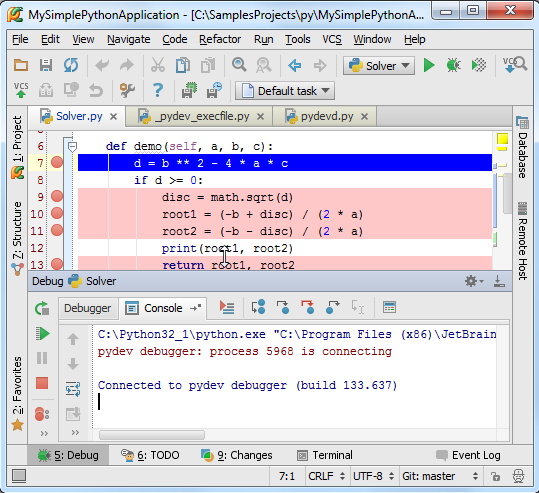
然后单击左侧工具栏中的命令符按钮，显示Python的命令提示符：
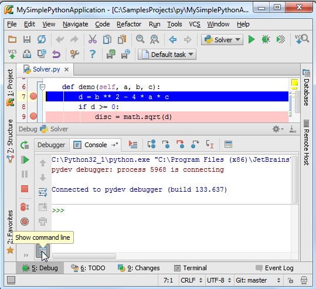
此时激活了控制台机制，尝试在其中执行一些Python命令：
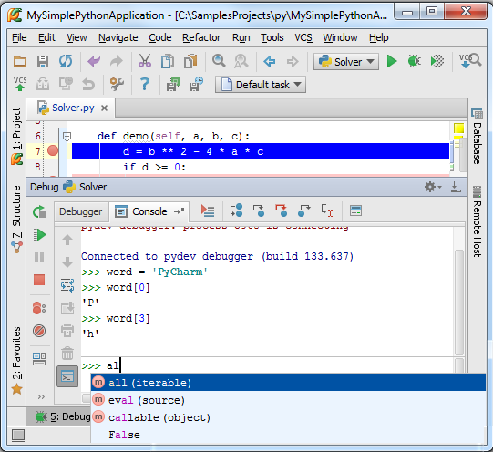
注意到控制台窗口提供了代码的拼写提示（Ctrl+Space）以及历史记忆（Up/Down keys）功能，更多信息参见： Using Debug Console
最后，如果你希望Console窗口一直处于可用状态，只需将其移动成为一个单独的窗口即可：
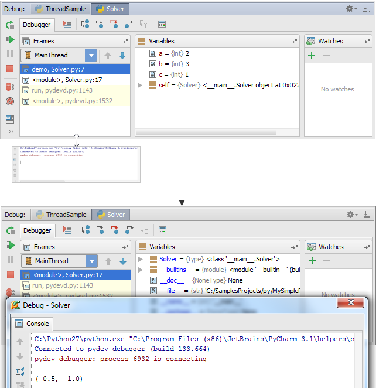
14、再次运行
在完成了本次调试运行并再次加载调试配置文件之后，我们可以再次运行调试，单击工具栏的run按钮即可。
15、REPL——在控制台界面调试程序
最后，如果你更习惯工作于控制台环境下，也可以将Pycharm设置成为控制台模式。在主菜单中选择Tools → Run Python Console...来加载控制台：
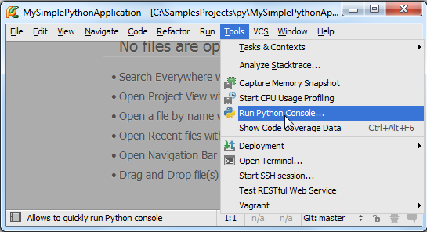
此时console窗口将会被激活，并显示为一个单独的窗口：
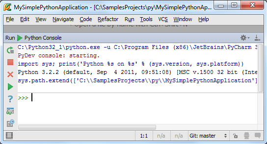
在这个控制台窗口中我们可以做很多有意思的事情，接下来我们演示如何将最近编写的Solver.py文件中的代码导入到控制台：
打开Solver.py文件（打开的方法多种多样，例如Ctrl+E - View → Recent Files），全选文件中的代码内容（Ctrl+A, or Edit → Select All），然后按下Alt+Shift+E（或者右击在弹出的快捷菜单中选择Execute Selection in Console）：
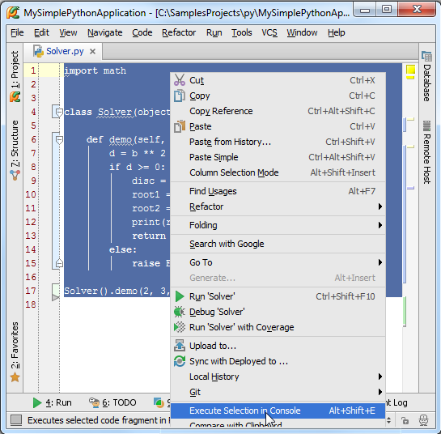
此时，Pycharm就会自动将选中的代码导入到控制台界面，方便我们对其进行编辑：
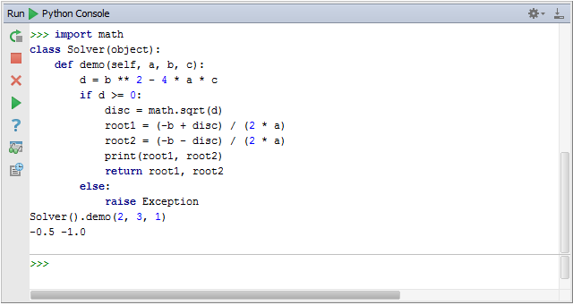